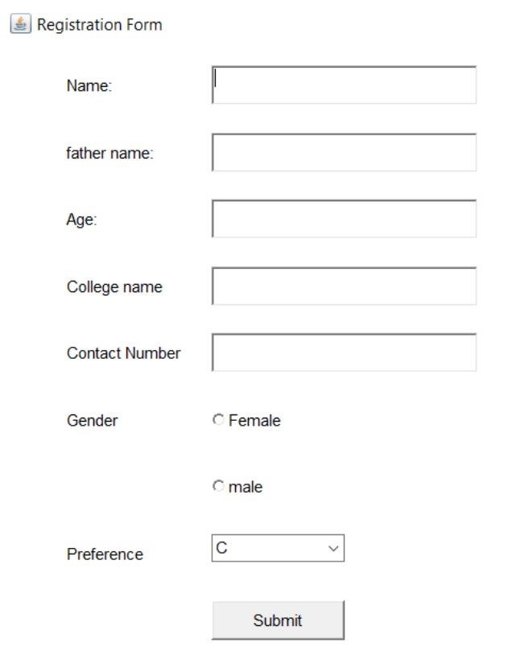

DLK Career Development Centre was my first internship experience, where I interned for a duration of two weeks.This invaluable opportunity provided me with a whole new realm of knowledge in the field of electronics. During my time I delved into the fundamentals of Arduino, sensors, and the application of IoT (Internet of Things). This exposure sparked a keen interest in the area of arduinos and sensors
I had the privilege of honing my skills in the Tinkercad software by undertaking various basic projects
Additionally, the internship offered insights into the world of IoT and microcontrollers like ESP32, along with a deep understanding of various sensors. It was an enriching experience that expanded my knowledge significantly.
Overall, DLK Career Development Centre provided an excellent learning platform, and I am grateful for the invaluable skills and knowledge I gained during my time there.
During my second internship at EMCOG Solutions, I delved into the fascinating world of embedded systems.Over the course of two weeks, I had the privilege of learning about various aspects of embedded systems, including microcontrollers, microprocessors, and embedded C.
The internship offered a hands-on experience, and I had the opportunity to work on projects using the microcontroller PIC 16F1516 in the Proteus software
Each project provided valuable insights and honed my skills in embedded systems development.
Throughout the internship, I tackled specific tasks related to the projects, which greatly enhanced my understanding and proficiency in the field. As the culmination of the internship, I successfully completed a small mini project that involved a temperature-based control system. In this project, LEDs and a buzzer were controlled based on predefined temperature thresholds, showcasing the practical application of my newfound knowledge.
Overall, the experience at EMCOG Solutions was enriching and served as a stepping stone in my journey to becoming a skilled professional in the realm of embedded systems. I am grateful for the valuable lessons learned and the rewarding opportunity to apply theoretical knowledge in real-world projects.
During my two-week internship at Empower Guiding Center, I had the privilege of delving into the fundamental concepts of Java, Swing, and AWT components. Prior to this internship, my knowledge of Java was limited, but this experience proved to be a transformative journey, equipping me with a comprehensive understanding of Java's core principles and syntax. The internship was an invaluable source of knowledge, significantly enhancing my expertise in this programming language.
A notable highlight of the internship was the culmination of my efforts in the form of a final project—a registration form and library management system. Implementing this project using AWT components showcased the practical application of the concepts I had acquired. It was a gratifying experience to witness the tangible outcomes of my learning journey and witness the successful implementation of real-world projects.
I am deeply grateful for the mentorship and valuable opportunities extended during this period, which have significantly contributed to my professional growth and expertise in Java development.
